Read-only snapshot of the PiLens gallery, exported 2026-11-06 14:13. Code and how to run it yourself: github.com/fsaritome/PiLens.
PiLens gallery
Each run is one source at one base and length. p_lens is the lens-level empirical p-value against random controls; q is the Benjamini-Hochberg q-value across all lenses of that run. q < 0.05 is highlighted.
bbp_b10_n100000
| lens | p_maxT | clf acc | p_lens | q (BH) | largest |z| metric | ratings |
|---|---|---|---|---|---|---|
| chord | 0.003 | 1.00 | 0.007 | 0.007 | transition_indep_z (+60240.7) | 0👍 0👎 |
| glyph | 0.003 | 1.00 | 0.007 | 0.007 | img_compress_ratio (-386.6) | 0👍 0👎 |
| grid | 0.003 | 1.00 | 0.007 | 0.007 | img_compress_ratio (-807.1) | 0👍 0👎 |
| pairs | 0.003 | 1.00 | 0.007 | 0.007 | diff_entropy_bits (-91497.8) | 0👍 0👎 |
| recurrence | 0.003 | 1.00 | 0.007 | 0.007 | lag_max_abs_z (+2142.3) | 0👍 0👎 |
| spiral | 0.003 | 1.00 | 0.007 | 0.007 | img_compress_ratio (-807.0) | 0👍 0👎 |
| walk | 0.003 | 1.00 | 0.007 | 0.007 | fft_slope (+23.4) | 0👍 0👎 |
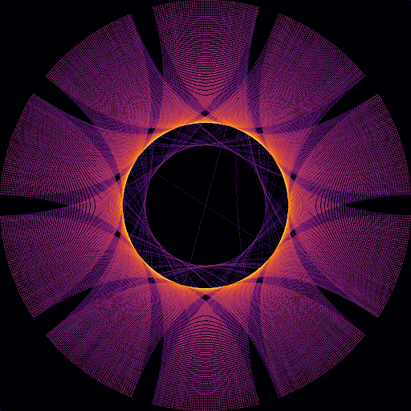
chord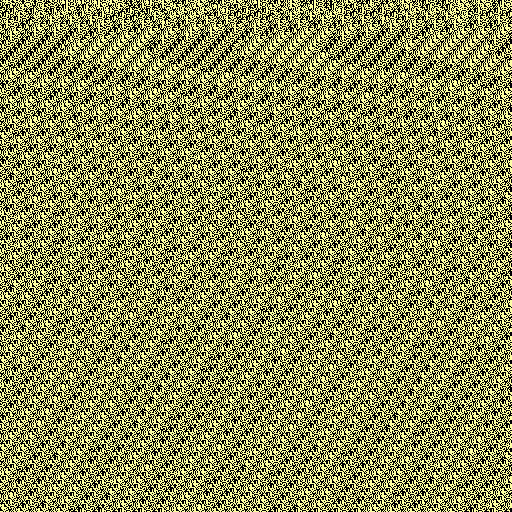
glyph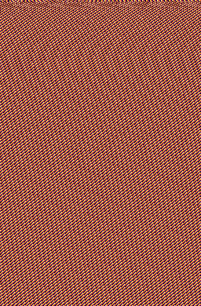
gridpairs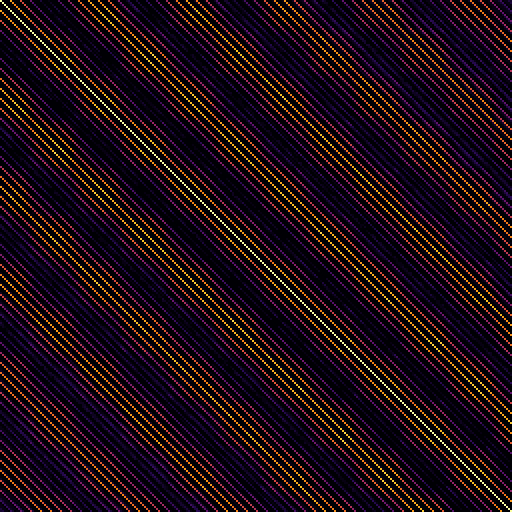
recurrence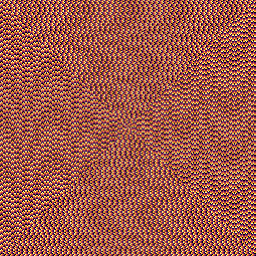
spiral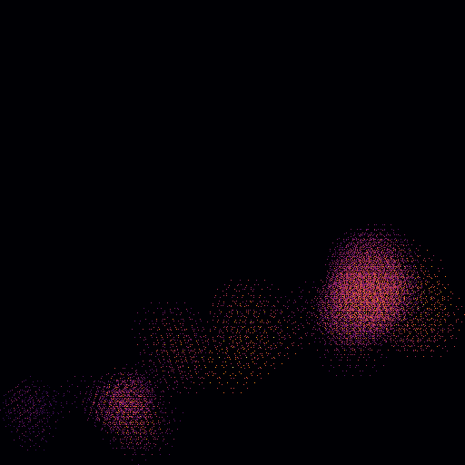
walke_b10_n100000
| lens | p_maxT | clf acc | p_lens | q (BH) | largest |z| metric | ratings |
|---|---|---|---|---|---|---|
| pairs | 0.186 | 0.50 | 0.371 | 0.922 | img_compress_ratio (+2.2) | 0👍 0👎 |
| grid | 0.427 | 0.55 | 0.535 | 0.922 | img_entropy_bits (-1.9) | 0👍 0👎 |
| glyph | 0.511 | 0.53 | 0.611 | 0.922 | fft_peak_log10 (+1.5) | 0👍 0👎 |
| walk | 0.371 | 0.52 | 0.743 | 0.922 | fft_peak_log10 (+1.7) | 0👍 0👎 |
| recurrence | 0.950 | 0.52 | 0.774 | 0.922 | determinism (+0.9) | 0👍 0👎 |
| spiral | 0.395 | 0.39 | 0.790 | 0.922 | horiz_neighbour_match (+1.8) | 0👍 0👎 |
| chord | 0.996 | 0.44 | 1.000 | 1.000 | fft_slope (+0.7) | 0👍 0👎 |
 glyph
glyph recurrence
recurrencepi_b10_n100000
| lens | p_maxT | clf acc | p_lens | q (BH) | largest |z| metric | ratings |
|---|---|---|---|---|---|---|
| glyph | 0.106 | 0.61 | 0.172 | 0.754 | fft_slope (+2.6) | 0👍 0👎 |
| grid | 0.134 | 0.55 | 0.267 | 0.754 | vert_match (-2.5) | 0👍 0👎 |
| chord | 0.766 | 0.58 | 0.323 | 0.754 | img_compress_ratio (-1.3) | 0👍 0👎 |
| pairs | 0.250 | 0.47 | 0.499 | 0.872 | img_entropy_bits (-2.1) | 0👍 0👎 |
| walk | 0.429 | 0.53 | 0.623 | 0.872 | fft_peak_log10 (-1.6) | 0👍 0👎 |
| recurrence | 0.898 | 0.42 | 1.000 | 1.000 | lag_max_abs_z (-1.0) | 0👍 0👎 |
| spiral | 0.575 | 0.48 | 1.000 | 1.000 | img_compress_ratio (-1.6) | 0👍 0👎 |
 chord
chord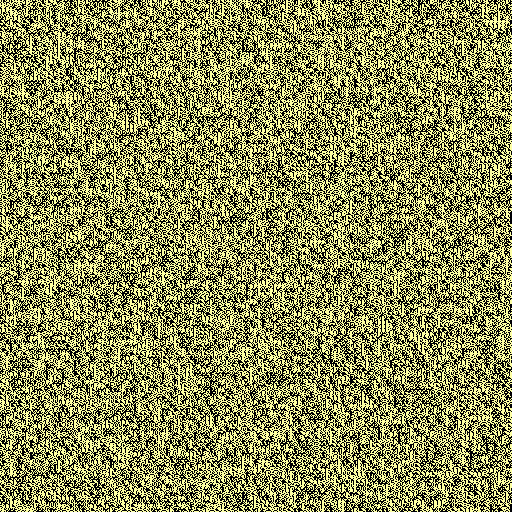
glyph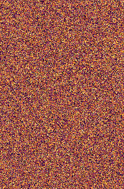
gridpairs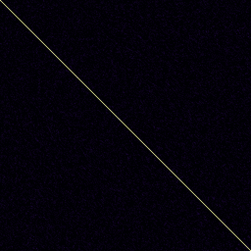
recurrence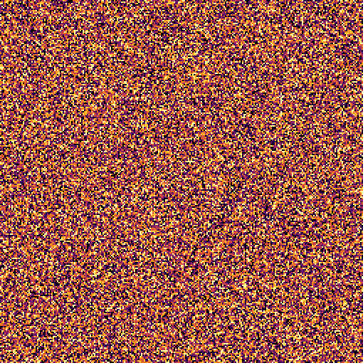
spiral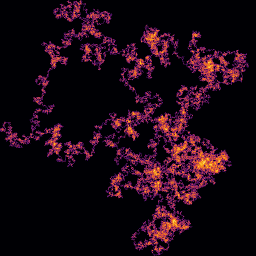
walkpi_b10_n1000000
| lens | p_maxT | clf acc | p_lens | q (BH) | largest |z| metric | ratings |
|---|---|---|---|---|---|---|
| glyph | 0.106 | 0.48 | 0.212 | 0.992 | fft_slope (+2.6) | 0👍 0👎 |
| chord | 0.739 | 0.58 | 0.283 | 0.992 | img_compress_ratio (-1.3) | 0👍 0👎 |
| grid | 0.261 | 0.48 | 0.523 | 1.000 | vert_match (-2.1) | 0👍 0👎 |
| pairs | 0.916 | 0.47 | 1.000 | 1.000 | diff_entropy_bits (-1.0) | 0👍 0👎 |
| recurrence | 0.637 | 0.38 | 1.000 | 1.000 | lag_max_abs_z (-1.5) | 0👍 0👎 |
| spiral | 0.575 | 0.45 | 1.000 | 1.000 | img_compress_ratio (-1.6) | 0👍 0👎 |
| walk | 0.605 | 0.42 | 1.000 | 1.000 | fft_flatness (+1.4) | 0👍 0👎 |
 glyph
glyph recurrence
recurrence spiral
spiralpi_b16_n100000
| lens | p_maxT | clf acc | p_lens | q (BH) | largest |z| metric | ratings |
|---|---|---|---|---|---|---|
| spiral | 0.244 | 0.59 | 0.160 | 0.540 | horiz_neighbour_match (+2.2) | 0👍 0👎 |
| glyph | 0.096 | 0.56 | 0.192 | 0.540 | img_compress_ratio (+2.5) | 0👍 0👎 |
| grid | 0.236 | 0.59 | 0.232 | 0.540 | diag_match (+2.2) | 0👍 0👎 |
| pairs | 0.174 | 0.50 | 0.347 | 0.587 | fft_peak_log10 (-2.2) | 0👍 0👎 |
| chord | 0.938 | 0.55 | 0.495 | 0.587 | mean_circular_step (-0.9) | 0👍 0👎 |
| recurrence | 0.263 | 0.55 | 0.503 | 0.587 | lag1_match_z (+2.0) | 0👍 0👎 |
| walk | 0.910 | 0.39 | 1.000 | 1.000 | img_entropy_bits (-0.9) | 0👍 0👎 |
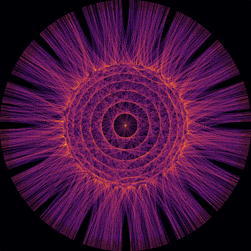
chord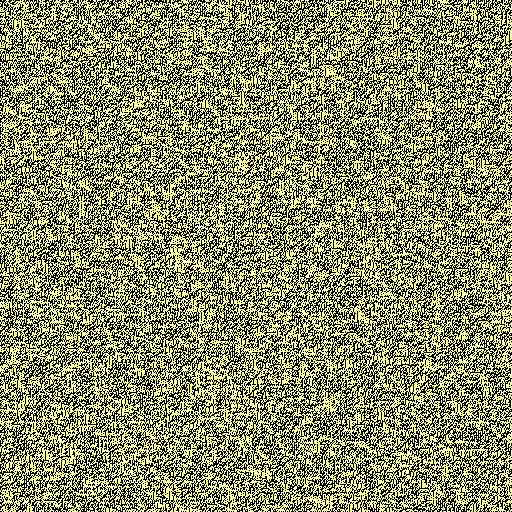
glyph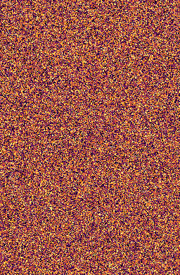
grid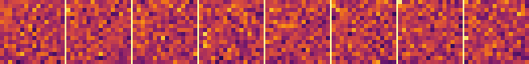
pairs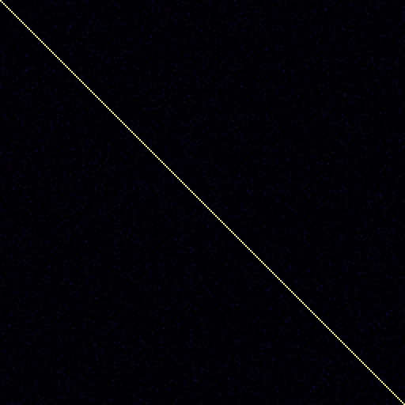
recurrence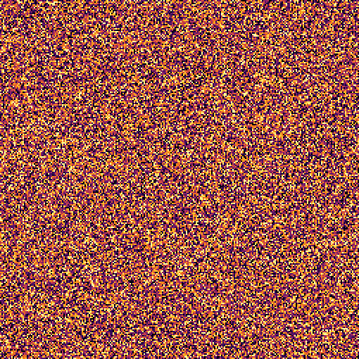
spiral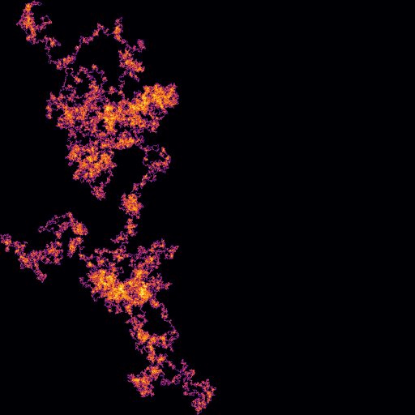
walkpi_b4_n100000
| lens | p_maxT | clf acc | p_lens | q (BH) | largest |z| metric | ratings |
|---|---|---|---|---|---|---|
| chord | 0.840 | 0.66 | 0.024 | 0.168 | mean_circular_step (-1.1) | 0👍 0👎 |
| pairs | 0.413 | 0.50 | 0.826 | 1.000 | fft_flatness (+1.7) | 0👍 0👎 |
| glyph | 0.958 | 0.47 | 1.000 | 1.000 | img_entropy_bits (+0.8) | 0👍 0👎 |
| grid | 0.768 | 0.44 | 1.000 | 1.000 | vert_match (+1.4) | 0👍 0👎 |
| recurrence | 0.936 | 0.48 | 1.000 | 1.000 | img_entropy_bits (-1.0) | 0👍 0👎 |
| spiral | 0.671 | 0.41 | 1.000 | 1.000 | fft_slope (-1.5) | 0👍 0👎 |
| walk | 0.800 | 0.39 | 1.000 | 1.000 | end_to_end_norm (-1.1) | 0👍 0👎 |
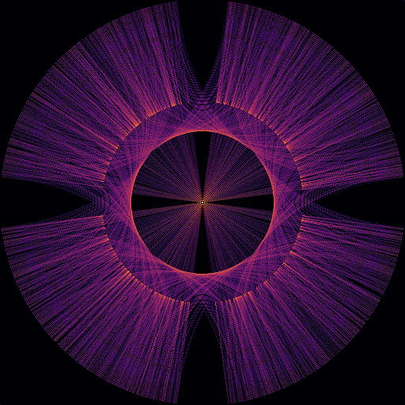
chord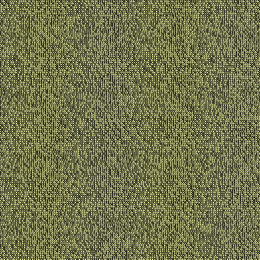
glyph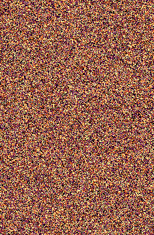
gridpairs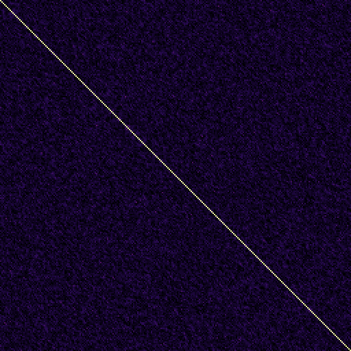
recurrence spiral
spiral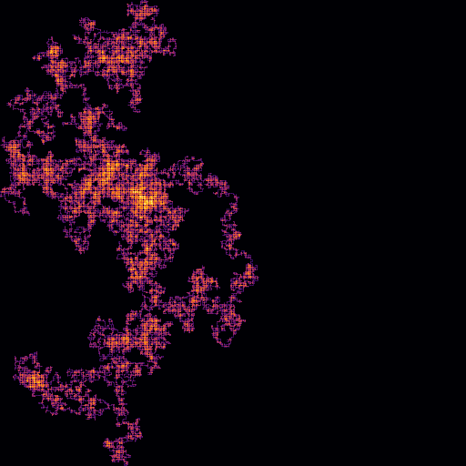
walkpi_b4_n1000000
| lens | p_maxT | clf acc | p_lens | q (BH) | largest |z| metric | ratings |
|---|---|---|---|---|---|---|
| grid | 0.986 | 0.55 | 0.503 | 1.000 | fft_slope (-0.9) | 0👍 0👎 |
| glyph | 0.958 | 0.53 | 0.651 | 1.000 | img_entropy_bits (+0.8) | 0👍 0👎 |
| pairs | 0.425 | 0.53 | 0.651 | 1.000 | fft_slope (-1.6) | 0👍 0👎 |
| chord | 0.733 | 0.45 | 1.000 | 1.000 | mutual_info_bits (-1.3) | 0👍 0👎 |
| recurrence | 0.874 | 0.48 | 1.000 | 1.000 | lag_max_abs_z (-1.2) | 0👍 0👎 |
| spiral | 0.671 | 0.41 | 1.000 | 1.000 | fft_slope (-1.5) | 0👍 0👎 |
| walk | 0.982 | 0.48 | 1.000 | 1.000 | fft_peak_log10 (+0.7) | 0👍 0👎 |
 chord
chord glyph
glyph recurrence
recurrencepi_cf_b10_n20000
| lens | p_maxT | clf acc | p_lens | q (BH) | largest |z| metric | ratings |
|---|---|---|---|---|---|---|
| glyph | 0.302 | 0.55 | 0.452 | 1.000 | fft_peak_log10 (-1.9) | 0👍 0👎 |
| walk | 0.950 | 0.53 | 0.684 | 1.000 | fft_flatness (-0.9) | 0👍 0👎 |
| spiral | 0.581 | 0.50 | 0.910 | 1.000 | vert_neighbour_match (-1.6) | 0👍 0👎 |
| chord | 0.468 | 0.45 | 0.937 | 1.000 | fft_peak_log10 (+1.5) | 0👍 0👎 |
| grid | 0.701 | 0.47 | 1.000 | 1.000 | fft_flatness (+1.4) | 0👍 0👎 |
| pairs | 0.625 | 0.39 | 1.000 | 1.000 | img_entropy_bits (+1.5) | 0👍 0👎 |
| recurrence | 0.545 | 0.45 | 1.000 | 1.000 | fft_slope (+1.5) | 0👍 0👎 |
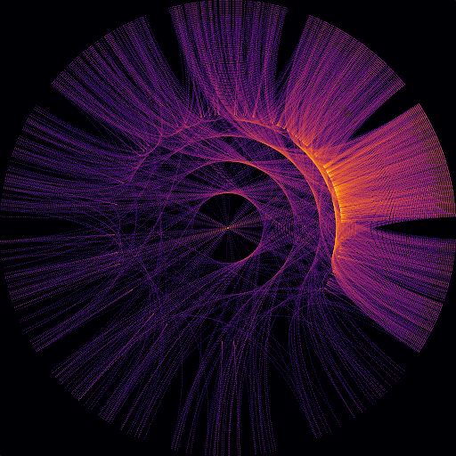
chord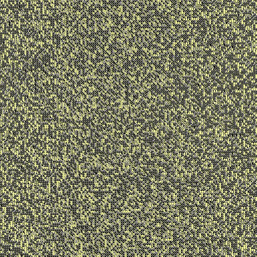
glyph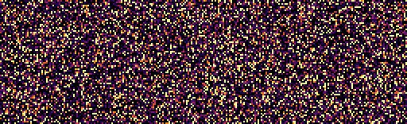
grid pairs
pairs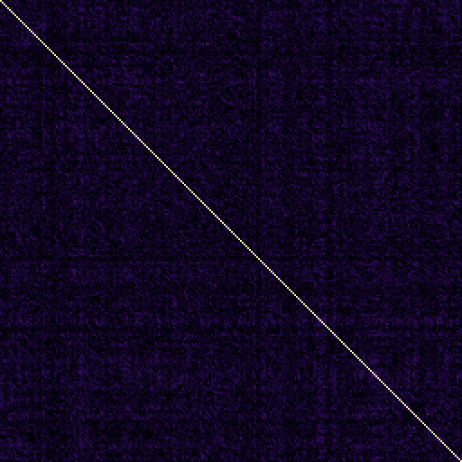
recurrence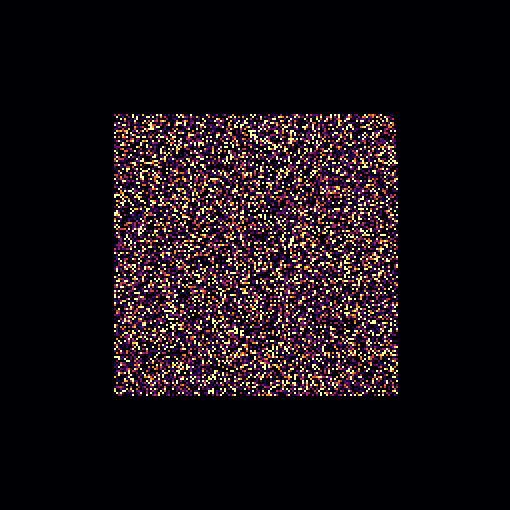
spiralwalkplanted_markov_0.01_b10_n100000
| lens | p_maxT | clf acc | p_lens | q (BH) | largest |z| metric | ratings |
|---|---|---|---|---|---|---|
| chord | 0.002 | 0.67 | 0.004 | 0.006 | transition_indep_z (+5.8) | 0👍 0👎 |
| grid | 0.002 | 0.77 | 0.004 | 0.006 | horiz_match (+8.5) | 0👍 0👎 |
| pairs | 0.002 | 0.70 | 0.004 | 0.006 | diff_entropy_bits (-14.9) | 0👍 0👎 |
| recurrence | 0.002 | 0.75 | 0.004 | 0.006 | lag_max_abs_z (+13.9) | 0👍 0👎 |
| spiral | 0.002 | 0.73 | 0.004 | 0.006 | horiz_neighbour_match (+3.9) | 0👍 0👎 |
| glyph | 0.148 | 0.56 | 0.295 | 0.345 | fft_flatness (+2.3) | 0👍 0👎 |
| walk | 0.764 | 0.56 | 0.447 | 0.447 | nu (+1.2) | 0👍 0👎 |
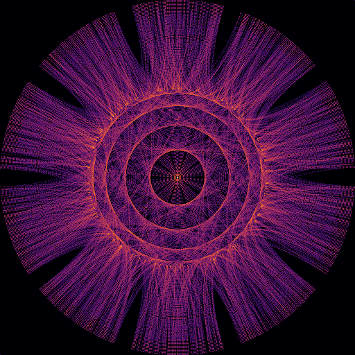
chord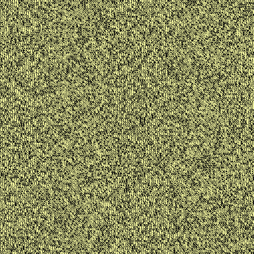
glyph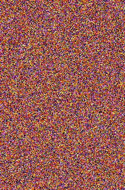
gridpairs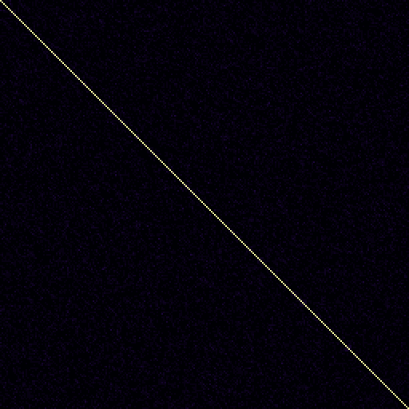
recurrence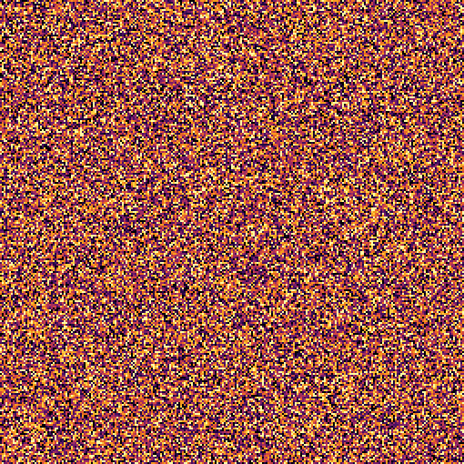
spiral walk
walksqrt2_b10_n100000
| lens | p_maxT | clf acc | p_lens | q (BH) | largest |z| metric | ratings |
|---|---|---|---|---|---|---|
| spiral | 0.096 | 0.66 | 0.020 | 0.140 | vert_neighbour_match (-2.6) | 0👍 0👎 |
| glyph | 0.030 | 0.45 | 0.060 | 0.210 | largest_component_frac (+3.2) | 0👍 0👎 |
| pairs | 0.311 | 0.61 | 0.192 | 0.447 | img_compress_ratio (-1.9) | 0👍 0👎 |
| grid | 0.942 | 0.56 | 0.395 | 0.692 | img_entropy_bits (+1.0) | 0👍 0👎 |
| recurrence | 0.273 | 0.47 | 0.547 | 0.766 | fft_slope (-2.0) | 0👍 0👎 |
| walk | 0.347 | 0.47 | 0.695 | 0.810 | nu (-1.7) | 0👍 0👎 |
| chord | 0.665 | 0.47 | 1.000 | 1.000 | img_compress_ratio (-1.4) | 0👍 0👎 |